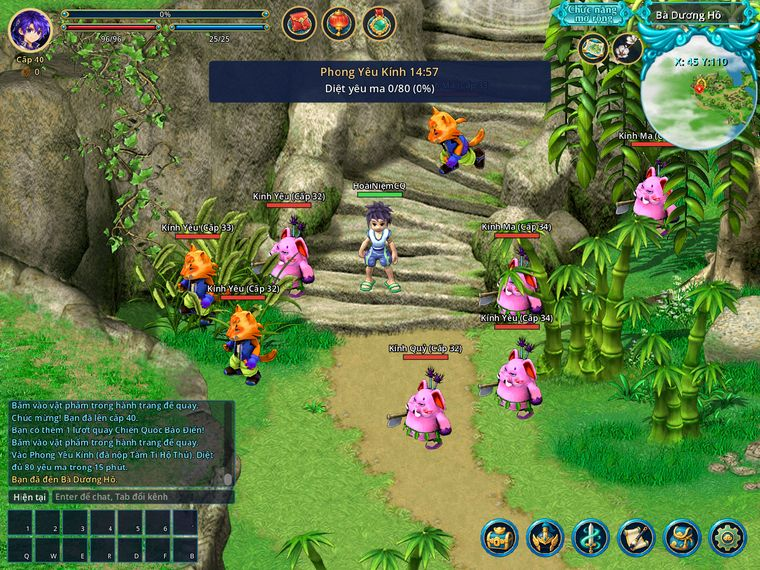
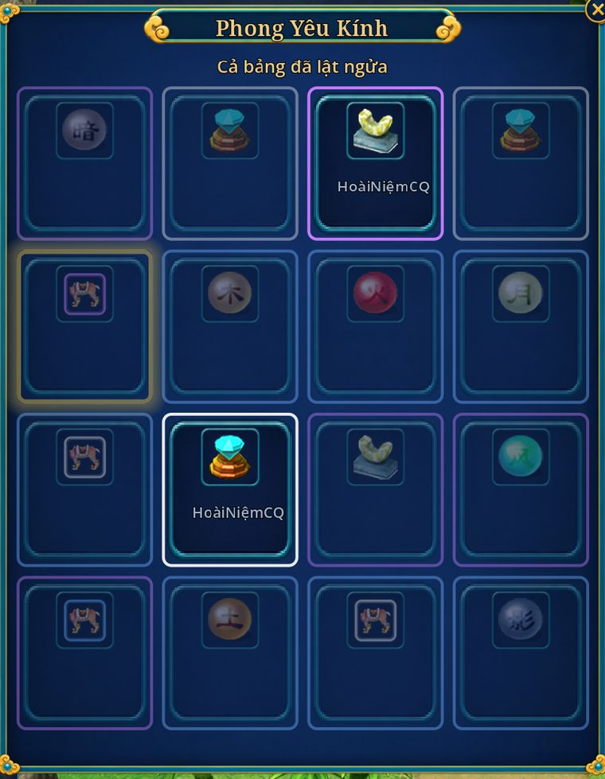

Mọi việc hằng ngày làm mới lúc 23:00 giờ Việt Nam. Bảng Hoạt động hôm nay cho biết việc nào còn; đồng hồ máy chủ dưới bản đồ nhỏ đếm ngược tới lúc qua ngày.
Nhiệm vụ sư môn
Mở từ
Cấp 10, đã bái sư
Ở đâu
Sư phụ ở căn cứ phái
Mấy lượt
20 việc mỗi ngày
Được gì
Kinh nghiệm, ngân lượng, điểm sư môn
Alt+Q, tab Môn Phái
Gặp sư phụ ở căn cứ phái để nhận việc. Chưa biết đường thì nhờ Sứ Giả Môn Phái ở Chu Quốc đưa đi (miễn phí). Trong sổ nhiệm vụ, bấm tên NPC là tự chạy tới. Mỗi ngày có hai chuỗi, mỗi chuỗi 10 việc:
Việc 1 đến 3: thăm hỏi một NPC.
Việc 4 đến 6: mua đồ ở tiệm rồi mang về nộp.
Việc 7 đến 9: diệt 12 quái (từ cấp 20: 15 quái), có khi là nhặt đồ quái rơi.
Việc 10: khiêu chiến phân thân trong 180 giây. Thua thì đánh lại, không giới hạn.
Mỗi việc cho kinh nghiệm, ngân lượng và 1 điểm sư môn. Việc càng sau thưởng càng to.
Xong việc 10: quay vòng quay sư môn (thêm 1,1 đến 1,5 lần tiền việc 10) và nhận 1 Nho Gia Lệnh.
23:00 túi việc về 20 việc. Việc chưa làm không để dành sang hôm sau.
Bảng Hoạt động hôm nay tính dòng sư môn đủ ở 10 việc.
Việc khó quá: chọn "Đổi việc khác" ở sư phụ (chờ 60 giây giữa hai lần đổi). Việc làm dở được giữ sang hôm sau.
Đổi điểm sư môn ở sư phụ
Món
Giá
Dùng làm gì
Sơ Cấp Đoạn Thạch
20 điểm + 250.000 lượng
Nâng sao ở thợ rèn
Thẻ Thần Thú chọn con
20 điểm
Mở hoặc nâng thần thú tự chọn
Ngân Lượng Bao
20 điểm
Mở ra ngân lượng theo cấp
Set sư môn
6 đến 12 điểm mỗi món, kèm ngân lượng
Trang bị phái, từ cấp 25
Đồ đổi bằng điểm đều khoá. Sư phụ còn tái tạo dòng set bằng Tử Kim Tinh (xem Tử Kim Tinh dùng làm gì).
Thưởng theo cấp
Cấp
Ngân lượng mỗi chuỗi
Kinh nghiệm mỗi chuỗi
10
70.000
khoảng 5.500
20
120.000
khoảng 45.600
30
190.000
khoảng 167.000
40
280.000
khoảng 341.000
Thưởng tính theo cấp lúc nhận việc, lên cấp giữa chừng không đổi.
Ngân Lượng Bao mở ra ngân lượng theo cấp lúc mua: trung bình cấp 20 khoảng 20.000, cấp 40 khoảng 80.000, cấp 60 khoảng 180.000. 66 % ra 60 tới 100 % mức đó, 28 % ra 100 tới 150 %, 6 % ra 150 tới 300 %. Rê chuột lên túi để xem khoảng tiền. Mỗi túi một ô.
Truy bắt cùng Vương Bộ Đầu
Mở từ
Cấp 20, đã bái sư
Ở đâu
Vương Bộ Đầu, Chu Quốc (313, 140)
Mấy lượt
1 chuyến mỗi ngày, 1 đến 5 người
Được gì
Ngân lượng, phiếu, Binh Gia Lệnh
Truy bắt nhóm: ải 1 trên 7, phản đồ Thục Sơn
Đi một mình hay cả đội, qua 7 ải phản đồ trong 30 phút, mỗi ải phản đồ một phái. Đội càng đông, phản đồ càng đông và mạnh.
Cả đội đứng gần Vương Bộ Đầu, cấp lệch không quá 10.
Đội trưởng chọn Truy bắt phản đồ rồi chọn độ khó. Mọi người phải đủ cấp của độ khó đó.
Hạ hết một ải: kinh nghiệm bằng 12 quái, mỗi người lật 1 thẻ ngân lượng.
Ải cuối lật nhiều thẻ hơn, có cả đồ. Qua đủ 7 ải thì nhận quà.
Độ khó
Từ cấp
Vé mỗi người
Ải cuối lật
Thường
20
miễn phí
2 thẻ
Khó
30
23.000 × cấp
3 thẻ
Địa Ngục
40
33.500 × cấp
3 thẻ
Vé tính theo cấp thấp nhất đội, từ cấp 50 không tăng nữa (cấp 40: Khó 920.000, Địa Ngục 1.340.000).
Đi một mình ở Thường được mời Triệu Vân trợ chiến (50.000 lượng). Bản Khiêu Chiến cần đội ít nhất 2 người (Khó 3, Địa Ngục 4).
Lật cùng một bảng với cả đội: thẻ người khác đã lật thì không lật lại được. Cả đội cùng ngã thì phản đồ còn sống về chỗ cũ, hồi đầy máu.
Biến cố truy bắt
Tật riêng: mỗi ải phản đồ mang một tật, tên tật hiện cạnh tên (Độn Thổ, Thế Thân, Liều Mạng, Đồng Bọn, Độc Thủ).
Bắt Sống: phản đồ dưới 10 % máu quỳ 5 giây; đứng sát, ngưng đánh 3 giây để trói. Được thêm 1 lượt lật ở Vòng Thưởng (cả chuyến tối đa 1).
Mỗi chuyến một biến cố (Địa Ngục hai): Tẩu Thoát hoặc Mật Báo.
Phi Tặc Vương (khoảng 10 % số chuyến): ải 7 là vua trộm, máu bằng cả toán phản đồ. Hạ được thì thêm 1 lượt lật.
Song Sát (chỉ Địa Ngục): ải 7 luôn là một cặp, phải hạ cả hai cách nhau dưới 10 giây.
Có Thiên Mệnh như phó bản. Khiêu Chiến cho thêm 1 lượt lật.
Số liệu chi tiết
Tật và biến cố
Độn Thổ lặn rồi trồi chỗ khác. Thế Thân dưới 50 % máu để lại người rơm, thân thật bỏ chạy. Liều Mạng dưới 30 % máu đánh mạnh hơn 50 %. Đồng Bọn gọi 2 tay chân. Độc Thủ đòn tẩm độc.
Tẩu Thoát: ở một ải ngẫu nhiên, tên cuối cùng còn 30 % máu thì bỏ chạy về mép bản đồ. Hạ kịp thì thôi; để lọt thì ải đó không có bảng thẻ, vẫn có kinh nghiệm.
Mật Báo: giữa hai ải có người mách tin, đội trưởng chọn trong 15 giây: Đường tắt bỏ qua một ải và bảng thẻ ải đó, hay Mai phục để ải kế phản đồ không có 5 giây bất tử. Không chọn thì Mai phục.
Song Sát: một tên ngã thì tên kia cứu nó dậy sau 10 giây. Chia đội, canh máu, chốt cùng lúc.
Cuồng Nộ ở đây là Phản Đồ Cuồng Nộ: dưới 45 % máu đánh mạnh hơn 20 %.
Thẻ ngân lượng
Giá thẻ ải 1 từ 100.000 đến 140.000, mỗi ải sau thêm 40.000.
Cấp 40 nhận 38 % giá thẻ, nhân theo độ khó: Thường 0,66, Khó 1,89, Địa Ngục 2,63.
Trên cấp 40 nhận thêm theo cấp (cấp 50 gấp 1,25 lần cấp 40). Dưới cấp 40 nhận ít hẳn (cấp 20 chỉ một phần tư).
Trừ vé, cả chuyến cấp 40 còn khoảng 500.000 lượng ở Thường, 550.000 ở Khó và Địa Ngục (cấp 50: khoảng 625.000, 675.000, 685.000), chưa kể quà qua ải.
Khó và Địa Ngục
Phản đồ ra chiêu dày hơn, đánh đau hơn, có tính cả pháp bảo của ngươi.
Thuốc máu (cả phần Khí Huyết của Tái Tạo Hoàn) chỉ còn 75 % tác dụng, Địa Ngục 50 %. Hút máu (dòng Hấp Thụ Khí Huyết, nội tại Huyết Chiến) cũng giảm như vậy.
Phản đồ không bị thú khiêu khích, đòn của thú vào phản đồ chỉ còn một nửa.
Mỗi đòn phản đồ trúng ít nhất 2 % máu người bị đánh (Khó 3 %, Địa Ngục 4 %). Đứng ngoài tầm quá 3 giây thì phản đồ lướt tới.
Tỉ lệ bảng ải cuối
Mỗi ô ghi số thẻ trên 16 và cơ hội lật trúng ít nhất một thẻ đó trong các lượt của mình. Đồ lật được bán, giao dịch được.
Thẻ
Thường (2 lượt)
Khó (3 lượt)
Địa Ngục (3 lượt)
Ngân lượng
15/16 · 100 %
10/16 · 96 %
8/16 · 90 %
Trung Cấp Đoạn Thạch
0
2/16 · 35 %
1/16 · 19 %
Cao Cấp Đoạn Thạch
0
1/16 · 19 %
2/16 · 35 %
Túi 90.000 lượng
0
2/16 · 35 %
3/16 · 49 %
Tinh Thạch cấp 2
0
0
1/16 · 19 %
Độc đắc (1 thẻ)
Trung Cấp · 12,5 %
Cao Cấp · 18,8 %
Cao Cấp · 18,8 %
Bách Gia Lệnh, Thiên Sứ Trao Đổi Mới
Ở đâu
Thiên Sứ Trao Đổi, Chu Quốc (299, 169)
Mấy lượt
Đổi không giới hạn
Tốn gì
1 Lệnh, có hàng thêm ngân lượng
Được gì
Vô Song Điểm Phiếu, Ngân Lượng Bao
Làm việc hằng ngày thì nhận Lệnh của các gia. Lệnh không khoá: giao dịch, bày bán, cất kho được (không bán tiệm). Đem tới Thiên Sứ Trao Đổi ở bờ sông Chu Quốc (cách Ngư Ông 5 ô) để đổi quà.
Ngân Lượng Bao ghi cấp người đổi, mỗi túi một ô trống.
Vô Song Điểm Phiếu dùng đổi đồ lưng ở Quân Sư Vô Song Thành.
Lệnh giao dịch được: thiếu thì mua của người khác ở chợ, không cần thì bán đi.
Phó bản Phong Yêu Kính
Mở từ
Cấp 20, 1 đến 5 người
Ở đâu
Tả Khâu Minh, Chu Quốc (251, 161)
Mấy lượt
1 lượt thưởng mỗi ngày
Tốn gì
Mỗi người một món Xanh

Trong kính: ba dạng yêu ma, đồng hồ 15 phút và số đã diệt
Vào gương 15 phút, diệt 80 yêu ma rồi hạ Kính Ma để lật thẻ. Đi một mình hay cả đội thì số yêu ma vẫn vậy.
Cả đội đứng gần Tả Khâu Minh, cấp lệch không quá 10. Đội trưởng nói chuyện, chọn độ khó.
Mỗi người tự nộp vé: món Xanh trở lên rẻ nhất trong hành trang (đồ đang mặc không tính). Không có món Xanh thì nộp 50.000 lượng thay vé.
Diệt đủ 80 yêu ma: Kính Yêu đánh gần, Kính Ma ném ám khí, Kính Quỷ đánh phép từ xa.
Hạ Kính Ma: mỗi người nhận Vô Song Điểm Phiếu (khoá), Quân Công và lật thẻ.
Độ khó
Từ cấp
Phí thêm mỗi người
Lật thẻ
Thường
20
không
1
Khó
30
300.000
2
Địa Ngục
40
600.000
3
Phiếu: Thường 1, Khó 2, Địa Ngục 3. Quân Công: 50, 100, 150. Khó thì yêu ma và Kính Ma máu, đòn gấp 1,5; Địa Ngục gấp 2.
Lượt thưởng tính lúc hạ Kính Ma: thua thì vào lại được trong ngày, tự rời thì mất lượt hôm nay (luật chung).
Trang bị bị khoá suốt lượt. Chết thì hồi sinh ở cổng sau 10 giây, không mất kinh nghiệm, trang bị mòn 5 %.
Kính Ma bốc 1 trong 7 con, mạnh theo người mạnh nhất đội. Khoảng 10 % số lượt gặp Kính Long (cả server được báo).
Mỗi lượt một biến cố (Địa Ngục hai) giữa lúc diệt yêu ma.
Đi một mình ở Thường được mời Triệu Vân trợ chiến (thêm 50.000). Bản Khiêu Chiến cần đội ít nhất 2 người (Khó 3, Địa Ngục 4).
Thẻ Thú Cưỡi Quý chỉ ra ở Khó (độc đắc) và Địa Ngục. Kính Ảnh, Linh Hồ, Kính Long và Khiêu Chiến cho thêm lượt lật.
Kính Ma, biến cố và tỉ lệ thẻ
Kính Ma
Bảy con: Long Nha Kính Ma (gọi bầy), Hổ Cảnh Kính Ma, Kính Ma Khuyển Thần, Ngưu Ma Vương, Thú Nhân Kiếm Sĩ, Sa Khắc Nữ Vương, Khuyển Thái Lang. Mỗi con có chiêu riêng.
Kính Ma đánh như Lữ Bố: đổi mục tiêu, lướt tới, nổi giận. Nó trâu theo số người còn trong lượt.
Kính Long: rồng tên vàng, máu gấp rưỡi, ba chiêu vùng. Hạ được thì thêm 1 lượt lật.
Vạn Kính Trận (chỉ Địa Ngục): Kính Ma dưới 40 % máu tách thành 3 bóng, chỉ một bóng thật. Đánh trúng bóng giả thì bóng vỡ, Kính Ma hồi 5 % máu; cứ 15 giây thật giả đổi chỗ. Nhìn kỹ và báo nhau, đừng xả bừa.
Biến cố
Kính Ảnh: gương soi ra bóng của một người trong đội, đúng phái và chiêu người đó, nửa sức. Hạ trong 40 giây: cả đội thêm 1 lượt lật.
Gương Nứt: 3 mảnh gương hiện quanh đội, phá cả 3 trong 25 giây thì Kính Ma sắp tới mất 15 % máu. Để sót thì mảnh còn lại hồi máu yêu ma quanh nó.
Yêu Triều: 20 yêu ma ùa tới từ một hướng (có vạch đỏ báo trước). Hạ hết trong 40 giây: kinh nghiệm yêu ma từ đó tới hết lượt thêm 20 %.
Linh Hồ Lạc Lối: hồ ly chạy vòng 30 giây, cần 15 đòn trúng (mỗi người tối đa 5): cả đội thêm 1 lượt lật.
Có Thiên Mệnh (Tự Bạo ở đây gọi là Kính Vỡ, Âm Khí là Yêu Khí).
Kinh nghiệm và lật thẻ
Bản đồ là một vùng luyện cấp hợp cấp cả đội. Kinh nghiệm mỗi con bằng nửa quái thường; đi đội thì mỗi người nhận kinh nghiệm mọi con cả đội diệt, thêm 10 % mỗi người cùng đi (đội 5: mỗi người gấp 1,4 lần đi một mình).
Khó và Địa Ngục mỗi nhịp một bảng 16 thẻ mới, mỗi nhịp lật 1 thẻ trong 30 giây. Mỗi độ khó một bảng riêng. Đồ lật được bán, giao dịch được.
Hết giờ chưa lật thì được lật hộ. Hành trang đầy thì quà vào túi chờ. Lượt lật thêm lật ở Vòng Thưởng.
Mỗi ô ghi số thẻ trên 16 và cơ hội lật trúng ít nhất một lần trong cả lượt.
Thẻ
Thường (1 lật)
Khó (2 nhịp)
Địa Ngục (3 nhịp)
Tinh Thạch cấp 1
5/16 · 31 %
0
0
Tinh Thạch cấp 2
2/16 · 12 %
7/16 · 68 %
3/16 · 46 %
Tinh Thạch cấp 3
0
0
4/16 · 58 %
Pháp bảo 0 sao
2/16 · 12 %
2/16 · 23 %
1/16 · 18 %
Sơ Cấp Đoạn Thạch
3/16 · 19 %
0
0
Trung Cấp Đoạn Thạch
0
3/16 · 34 %
1/16 · 18 %
Cao Cấp Đoạn Thạch
0
0
3/16 · 46 %
Thẻ Thú Cưỡi Thường
2/16 · 12 %
0
0
Thẻ Thú Cưỡi Hiếm
1/16 · 6 %
3/16 · 34 %
0
Thẻ Thú Cưỡi Quý
0
0
3/16 · 46 %
Độc đắc (1 thẻ)
Thẻ Thú Cưỡi Hiếm · 6 %
Thẻ Thú Cưỡi Quý · 12 %
2 Thẻ Thú Cưỡi Quý · 18 %
Pháp bảo 0 sao ra ngẫu nhiên loại.

Bảng thẻ sau khi hạ Kính Ma
Chiến Quốc Tống Bảo Tiểu Yêu
Mở từ
Cấp 10
Ở đâu
Bản đồ hoang, mỗi map một con
Mấy lượt
Không giới hạn, 5 lần đầu rơi đồ
Được gì
Kinh nghiệm, ngân lượng, tiềm năng
Chiến Quốc Bảo Điển, thẻ Tống Yêu: map nào đang có
Mỗi bản đồ hoang có một con quái hiếm tên xanh. Bị hạ thì 60 phút sau hiện lại ở chỗ ngẫu nhiên.
Mở Chiến Quốc Bảo Điển, thẻ Tống Yêu: xem map nào đang có con (quái từ thấp hơn bạn 10 cấp tới cao hơn 5 cấp).
Bấm Bay tới (5 Phi Hành Phù, phù khoá dùng trước): niệm 2 giây rồi đáp ngay cạnh con quái. Con chưa hiện thì đáp ở cổng vào, nó vừa hiện là được đưa tới.
Hạ nó. Đội gây nhiều sát thương nhất được tính, không cần ra đòn cuối.
Mỗi lần hạ: kinh nghiệm bằng 40 quái cùng cấp, ngân lượng cấp quái × 750, tiềm năng cấp quái × 5 (cấp 40: 200).
5 lần đầu mỗi ngày có thêm một phần thuốc và có thể rơi đồ. Bảo Điển ghi "Hôm nay còn N / 5 lần nhận đồ".
Mỗi người trong đội nhận thưởng và tung đồ riêng.
Cao hơn quái quá 10 cấp thì không có thưởng.
Có Tống Bảo từ cấp 10 tới 55: cấp 45 ở Kênh Trịnh Quốc 1, 2; cấp 50 ở Kênh Trịnh Quốc 3 và vùng Trường Bạch; cấp 55 ở Yên Trường Thành.
Quái thường chỉ rơi đồ Xanh từ cấp 30, nên ở cấp 10 đến 25 đây là chỗ nhặt đồ Xanh có sẵn.
Tỉ lệ rơi đồ
Rơi thêm (5 lần đầu mỗi ngày)
Tỉ lệ
Tinh Thạch cấp 1 (khoá)
15 %
Tinh Thạch cấp 2 (khoá, quái từ cấp 30)
3 %
Đồ Xanh đúng cấp quái, đã phong ấn
10 %
Pháp bảo 0 sao
5 %
Sơ Cấp Đoạn Thạch (khoá)
5 %
Đồ Xanh ra ngẫu nhiên vũ khí, áo, mũ, giày, dây chuyền hoặc đai, của mọi phái và cả hai giới, đủ 2 dòng phụ. Đồ đã phong ấn: mặc, rèn, bán tiệm được; muốn giao dịch thì giải phong ấn ở thợ rèn.
Thuốc (luôn có, một trong các phần)
Tỉ lệ
3 Hạt Lạc Hoàn
30 %
3 Cấp Cứu Đan
28 %
2 Tử Sâm Đơn
20 %
3 Hoạt Tâm Đan
13,75 %
1 thuốc tăng chỉ số 1 giờ
5 %
2 Tái Tạo Hoàn
3,25 %
Thuốc tăng chỉ số 1 giờ là một trong: Khí Mạch Đan, Chu Thiên Đơn, Tiêu Dao Tán, Kim Cang Tán, Tử Tâm Đơn. Tiềm năng nhận được vẫn trong trần tiềm năng cấp × 1.000.
Trộm Bảo Phi Tặc
Ở đâu
5 bản đồ, mỗi đầu giờ
Mấy lượt
10 con mỗi ngày
Được gì
Ngân lượng, Kim Nguyên Bảo, một món quý
Mỗi đầu giờ có 5 Trộm Bảo Phi Tặc hiện ở 5 bản đồ khác nhau, chọn trong các bản đồ có Tống Bảo Tiểu Yêu. Phút 55 kênh hệ thống báo trước. Hết giờ cả đợt bay đi, kể cả con đang bị đánh.
Mở Bảo Điển, tab Trộm Bảo: xem 5 bản đồ giờ này, con nào còn. Bấm Bay tới (5 Phi Hành Phù) để đáp ngay cạnh nó.
Đứng gần (3 ô), bấm vào con trộm, chọn Khiêu chiến. Nó hoá đúng cấp người bấm, máu gấp 25 quái cùng cấp.
Người khác đánh phụ được. Ai ra đòn cuối thì người đó và cả đội đứng cùng bản đồ nhận thưởng.
Mỗi người một đống đồ riêng dưới đất, chỉ mình thấy: bấm Space để nhặt.
Mỗi nhân vật nhận thưởng 10 con mỗi ngày. Chênh cấp con trộm quá 10 thì không nhận, không mất lượt.
Cả đội chết, rời bản đồ, hoặc 2 phút không ai đánh: con trộm hồi đầy máu và về trạng thái không đánh được.
Con đã bị bắt thì nút Bay tới mờ. Bảng Hoạt động có dòng Trộm Bảo Phi Tặc.
Kim Nguyên Bảo dùng mua đồ ở tab Kim Nguyên Bảo của Bảo Khố.
Thưởng mỗi con
Phần thưởng
Số lượng
Kinh nghiệm
bằng 10 quái cùng cấp
Túi tiền
5 túi, tổng cấp × 600 (cấp 40: 24.000)
Kim Nguyên Bảo
cấp con trộm chia 10 (cấp 50: 5)
Thuốc hồi đúng cấp
3
Thuốc tăng chỉ số 1 giờ
1
Thêm một món quý (khoá), một trong:
Món quý
Tỉ lệ
Tinh Thạch cấp 1
62 %
Đồ Xanh đúng cấp (phong ấn)
20 %
Tử Sâm Đơn
10 %
Túi 5 Kim Nguyên Bảo
5 %
Pháp bảo 0 sao
3 %
Câu cá ở Ngư Ông
Mở từ
Cấp 20
Ở đâu
Ngư Ông, Chu Quốc (294, 164)
Mấy lượt
240 lần mỗi ngày
Được gì
Ngư Điểm để đổi đồ
Đứng gần Ngư Ông (bệ đá sát hồ ở Chu Quốc, gần Cổ Mộ Xa Phu và Bảo Thú Đại Phu), chọn Câu cá. Không cần cần câu hay mồi.
Ngồi yên: cứ 60 giây giật cần một lần, một nửa số lần được cá. Cá tự thành Ngư Điểm, không chiếm ô hành trang. Trên đầu hiện "Đang câu 37/240".
Chọn Đổi Ngư Điểm ở Ngư Ông để đổi đồ.
Đi, đánh, dùng chiêu hay thoát game là dừng câu: chỉ câu khi đang trong game.
Tối đa 240 lần mỗi ngày (4 giờ). Treo đủ được khoảng 120 con cá, chừng 196 Ngư Điểm.
Bảng Hoạt động tính dòng Câu cá khi câu đủ 10 Ngư Điểm trong ngày.
Câu cá không cho kinh nghiệm hay ngân lượng. Ngư Điểm để dành qua ngày, không mất.
Cá Voi Đom Đóm lên đủ 10 sao thì thành Thần Cá Voi. Treo máy đều tay khoảng 5 ngày là đủ điểm đổi thẻ. Đã có con này rồi thì tiệm không bán thẻ nữa.
Tỉ lệ mẻ cá
Mẻ cá
Tỉ lệ
Ngư Điểm
Cá nhỏ
79,5 %
+1
Cá vừa
18 %
+3
Cá to
2 %
+10
Cá Vàng
0,5 %
+20
Tỉ lệ tính trên các lần được cá. Câu được Cá Vàng thì cả server được báo.
Điểm danh, Chiến Quốc Bảo Điển
Ở đâu
Bảng Điểm danh
Mấy lượt
Mỗi ngày một lần, vòng 7 ngày
Được gì
Lượt quay Bảo Điển, Đoạn Thạch
Mỗi ngày điểm danh một lần. Đếm theo số ngày đã điểm danh: lỡ một ngày không bị về ngày 1; hết ngày 7 thì quay lại ngày 1.
Ngày 1 tới 6: 2 lượt quay Chiến Quốc Bảo Điển và 1 Chiến Quốc Lệnh. Ngày 7: 5 lượt quay, 2 Sơ Cấp Đoạn Thạch và 3 Chiến Quốc Lệnh. Ở trần cấp thì không nhận Chiến Quốc Lệnh. Mọi quà điểm danh đều khoá.
Quên điểm danh: bù được ngày lỡ trong 7 ngày gần nhất, giá 5 điểm sư môn (ô ngày 7 giá 15), tối đa 2 lần mỗi vòng, phải điểm danh hôm nay trước.
Tab Quà online: online đủ 15, 30, 45, 60 phút trong ngày, mỗi mốc 1 lượt quay; đủ 120 và 180 phút, mỗi mốc 2 lượt. Qua 23:00 chưa bấm nhận là mất.
Lượt quay còn đến từ Tu Vị (mỗi bậc 1 lượt) và thưởng Hoạt động hôm nay đạt 50 % (1 lượt, 1 Sơ Cấp Đoạn Thạch, 1 Ngân Lượng Bao).
Vòng quay Chiến Quốc Bảo Điển
16 ô, quà ra đều khoá.
Quà
Số ô
Tỉ lệ mỗi lượt
Thẻ Thần Thú ngẫu nhiên
1
3 %
90.000 lượng
2
10 %
30.000 lượng
5
35 %
5 Thẻ Lăng Ba Vi Bộ
5
37 %
Tinh Thạch cấp 1 ngẫu nhiên
1
5 %
Sơ Cấp Đoạn Thạch
2
10 %
Ô ngân lượng đủ số từ cấp 40. Dưới cấp 40 nhận ít hơn: cấp 30 khoảng nửa (30.000 thành 16.875), cấp 20 một phần tư (7.500), cấp 10 một phần mười sáu (1.875).
Thanh tiến độ cả server
Mở từ
Cấp 20
Ở đâu
Bảng Hoạt động, tab Hôm nay
Được gì
Lượt quay, Đoạn Thạch (khoá)
Mỗi ngày, tài khoản nào có nhân vật cấp 20 trở lên đạt thưởng Hoạt động hôm nay (5 trên 9 việc đã mở) thì góp 1 điểm vào thanh chung của cả server. Mỗi tài khoản góp tối đa 1 điểm mỗi ngày, mỗi máy tính tối đa 2 tài khoản.
Thanh có 5 mốc. Qua mốc nào thì cả server được báo; mốc cộng dồn, mỗi mốc bấm Nhận riêng.
Chỉ nhân vật đã góp điểm mới nhận quà, nhận được cả những mốc mở sau lúc mình góp. Nhận trước 23:00, qua ngày là mất.
Mốc (số người đạt)
Quà (khoá)
3
2 lượt quay Chiến Quốc Bảo Điển
6
2 lượt quay Chiến Quốc Bảo Điển
9
1 Sơ Cấp Đoạn Thạch
12
1 Sơ Cấp Đoạn Thạch
15
1 Trung Cấp Đoạn Thạch
Đủ cả 5 mốc trong một ngày: 4 lượt quay, 2 Sơ Cấp và 1 Trung Cấp Đoạn Thạch mỗi người. Rủ bằng hữu cùng làm Hoạt động để thanh đầy sớm. Nút Hoạt động trên màn hình sáng viền khi có quà nhận ngay.